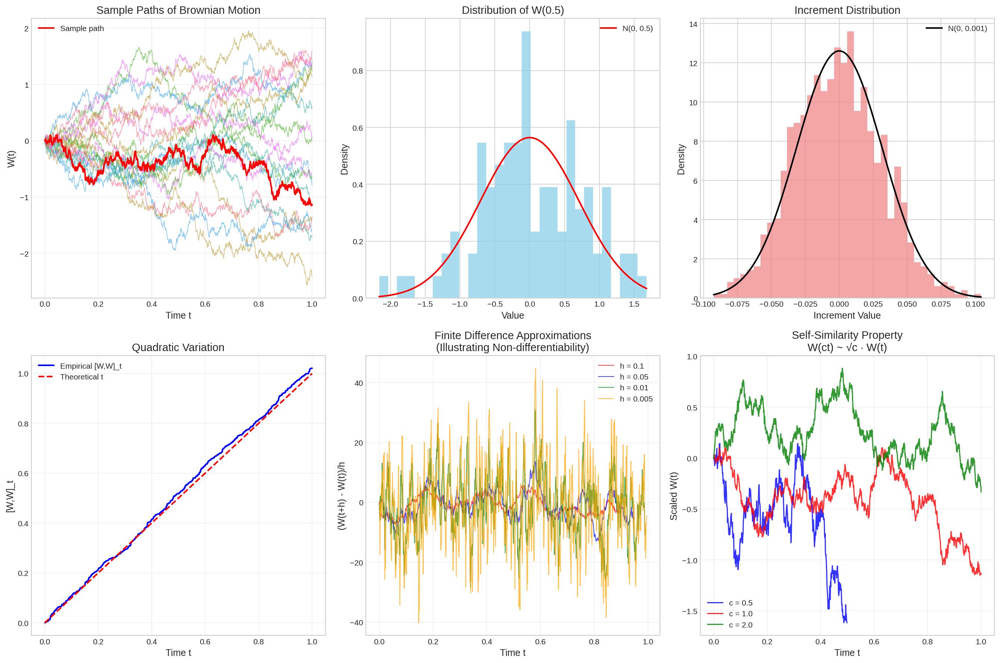

Code
@njit
def simulate_brownian_motion(T, N, n_paths=5):
"""Efficiently simulate Brownian motion paths using Numba acceleration."""
dt = T / N
sqrt_dt = np.sqrt(dt)
paths = np.zeros((n_paths, N + 1))
for i in range(n_paths):
for j in range(1, N + 1):
paths[i, j] = paths[i, j-1] + sqrt_dt * np.random.randn()
return paths
# Simulation parameters
T = 1.0 # Time horizon
N = 1000 # Number of time steps
n_paths = 100
dt = T / N
t = np.linspace(0, T, N + 1)
# Generate multiple Brownian motion paths
np.random.seed(42)
paths = simulate_brownian_motion(T, N, n_paths)
fig, axes = plt.subplots(2, 3, figsize=(18, 12))
# Sample paths
axes[0, 0].plot(t, paths[:20].T, alpha=0.6, linewidth=0.8)
axes[0, 0].plot(t, paths[0], 'r-', linewidth=2, label='Sample path')
axes[0, 0].set_title('Sample Paths of Brownian Motion')
axes[0, 0].set_xlabel('Time t')
axes[0, 0].set_ylabel('W(t)')
axes[0, 0].legend()
axes[0, 0].grid(True, alpha=0.3)
# Distribution at fixed time
t_fixed = 0.5
W_fixed = paths[:, int(t_fixed * N)]
axes[0, 1].hist(W_fixed, bins=30, density=True, alpha=0.7, color='skyblue')
x_range = np.linspace(W_fixed.min(), W_fixed.max(), 100)
theoretical_pdf = stats.norm.pdf(x_range, 0, np.sqrt(t_fixed))
axes[0, 1].plot(x_range, theoretical_pdf, 'r-', linewidth=2, label=f'N(0, {t_fixed})')
axes[0, 1].set_title(f'Distribution of W({t_fixed})')
axes[0, 1].set_xlabel('Value')
axes[0, 1].set_ylabel('Density')
axes[0, 1].legend()
# Increment distribution
increments = np.diff(paths[0])
axes[0, 2].hist(increments, bins=40, density=True, alpha=0.7, color='lightcoral')
x_inc = np.linspace(increments.min(), increments.max(), 100)
theoretical_inc = stats.norm.pdf(x_inc, 0, np.sqrt(dt))
axes[0, 2].plot(x_inc, theoretical_inc, 'k-', linewidth=2, label=f'N(0, {dt:.3f})')
axes[0, 2].set_title('Increment Distribution')
axes[0, 2].set_xlabel('Increment Value')
axes[0, 2].set_ylabel('Density')
axes[0, 2].legend()
# Quadratic variation approximation
def quadratic_variation(path, dt):
"""Compute empirical quadratic variation."""
increments = np.diff(path)
return np.cumsum(increments**2)
qv = quadratic_variation(paths[0], dt)
axes[1, 0].plot(t[1:], qv, 'b-', linewidth=2, label='Empirical [W,W]_t')
axes[1, 0].plot(t, t, 'r--', linewidth=2, label='Theoretical t')
axes[1, 0].set_title('Quadratic Variation')
axes[1, 0].set_xlabel('Time t')
axes[1, 0].set_ylabel('[W,W]_t')
axes[1, 0].legend()
axes[1, 0].grid(True, alpha=0.3)
# Path roughness (non-differentiability)
# Compute finite difference approximations to derivatives
h_values = [0.1, 0.05, 0.01, 0.005]
colors = ['red', 'blue', 'green', 'orange']
for i, h in enumerate(h_values):
n_h = int(h / dt)
if n_h > 0:
t_deriv = t[:-n_h]
finite_diff = (paths[0, n_h:] - paths[0, :-n_h]) / h
axes[1, 1].plot(t_deriv, finite_diff, color=colors[i], alpha=0.7,
linewidth=1, label=f'h = {h}')
axes[1, 1].set_title('Finite Difference Approximations\n(Illustrating Non-differentiability)')
axes[1, 1].set_xlabel('Time t')
axes[1, 1].set_ylabel('(W(t+h) - W(t))/h')
axes[1, 1].legend()
axes[1, 1].grid(True, alpha=0.3)
# Scaling property demonstration
scaled_paths = []
scale_factors = [0.5, 1.0, 2.0]
colors_scale = ['blue', 'red', 'green']
for i, c in enumerate(scale_factors):
# W(ct) has same distribution as sqrt(c) * W(t)
if c != 1.0:
t_scaled = t * c
if c < 1.0:
# Subsample for c < 1
indices = np.linspace(0, len(t)-1, int(len(t)*c)).astype(int)
scaled_path = paths[0, indices] / np.sqrt(c)
t_plot = t[:len(indices)]
else:
# Extend time for c > 1
extended_path = simulate_brownian_motion(T*c, int(N*c), 1)[0]
scaled_path = extended_path / np.sqrt(c)
t_plot = np.linspace(0, T, len(scaled_path))
else:
scaled_path = paths[0]
t_plot = t
axes[1, 2].plot(t_plot, scaled_path, color=colors_scale[i],
linewidth=1.5, alpha=0.8, label=f'c = {c}')
axes[1, 2].set_title('Self-Similarity Property\nW(ct) ~ √c · W(t)')
axes[1, 2].set_xlabel('Time t')
axes[1, 2].set_ylabel('Scaled W(t)')
axes[1, 2].legend()
axes[1, 2].grid(True, alpha=0.3)
plt.tight_layout()
plt.show()
